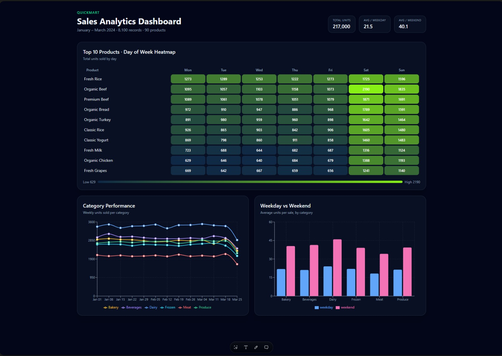
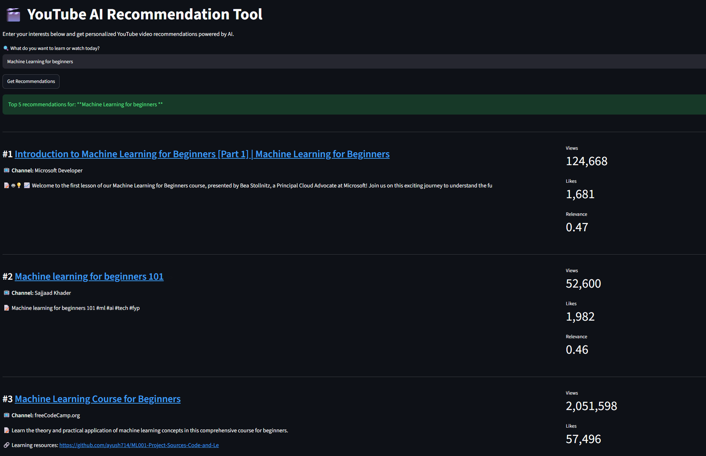
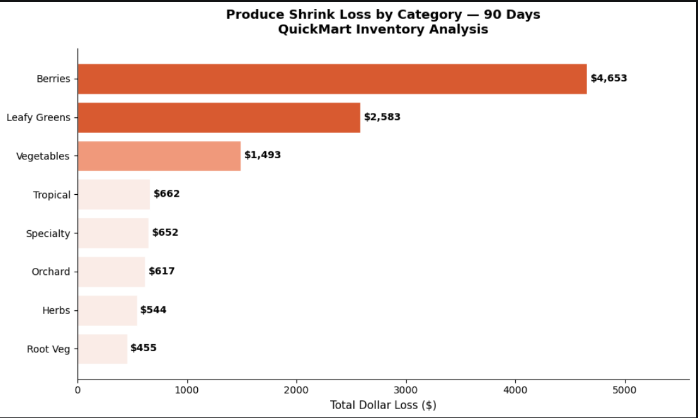

An agentic AI system built with LangChain, where an LLM plans, calls tools in a loop, and synthesizes an answer — with no hardcoded pipeline. Given a research question, the agent autonomously decides which of three custom tools to call (YouTube search, video stats, comparison), chains them in sequence, and reasons over live YouTube data. Includes a Streamlit chat UI that streams the agent's tool calls live. Fully deployed on Streamlit Cloud.
Stack: Python · LangChain · Anthropic Claude · YouTube Data API v3 · Streamlit


End-to-end analytics system analyzing 8,100 sales records across 90 products — identifying weekend demand surges of 1.2x–2.5x baseline and delivering dynamic reorder recommendations that replace schedule-based restocking. Delivered with an interactive Streamlit dashboard, a business memo, and a stakeholder presentation.
Stack: Python · SQLAlchemy · SQLite · Streamlit · pandas · Faker

AI-powered web app that fetches live YouTube data via the YouTube Data API v3 and ranks videos by relevance using a TF-IDF content-based recommendation engine — not just view count. Fully deployed on Streamlit Cloud.
Stack: Python · YouTube Data API v3 · pandas · scikit-learn · Streamlit

90-day produce department shrink simulation built on domain knowledge from working in grocery retail. Identified that Berries and Leafy Greens drive 61% of total shrink loss and that Monday is consistently the highest waste day — driven by weekend overstock. Delivered with 3 visualizations and data-driven reorder recommendations.
Stack: Python · pandas · NumPy · matplotlib · Zerve

Python-based statistical analysis investigating what actually drives movie gross revenue. Used Pearson correlation across budget, votes, runtime, and company to find that budget and audience votes are the strongest predictors of earnings — while production company has surprisingly low correlation.
Stack: Python · pandas · NumPy · Seaborn · Matplotlib